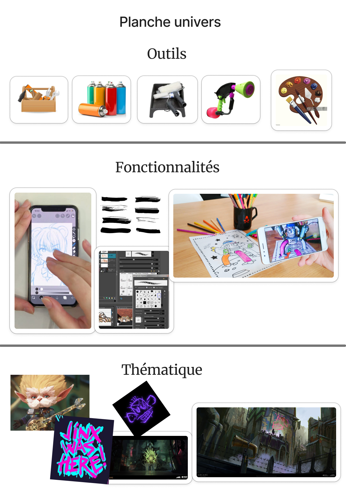
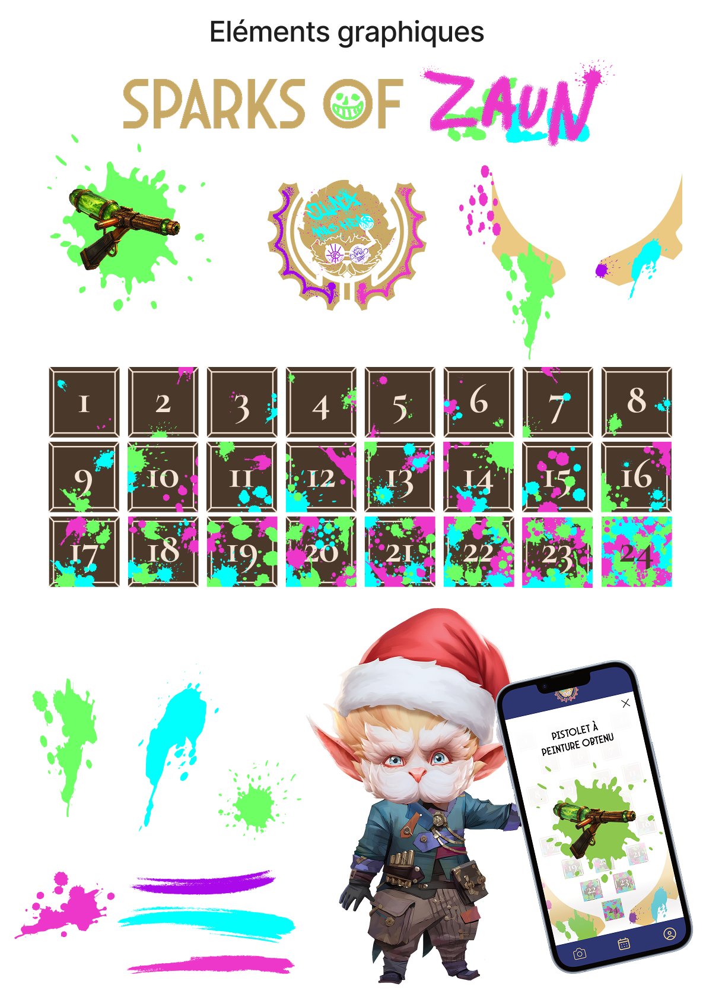
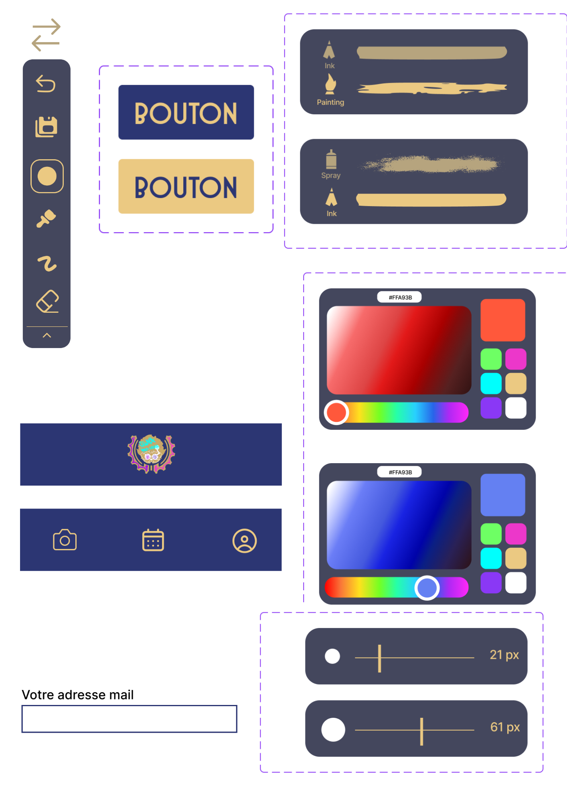
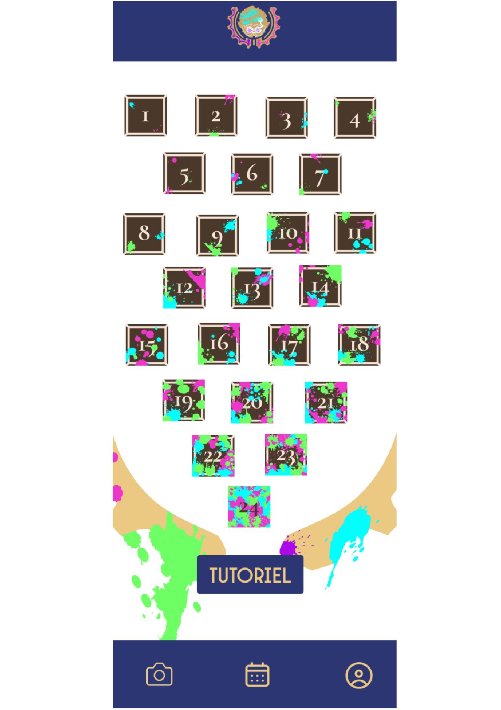
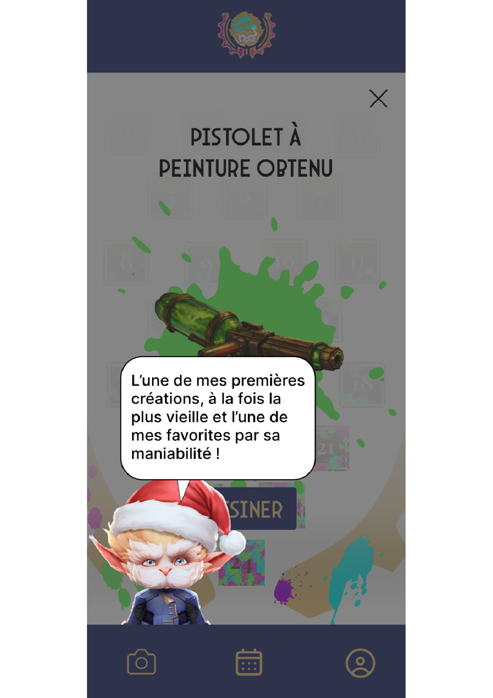
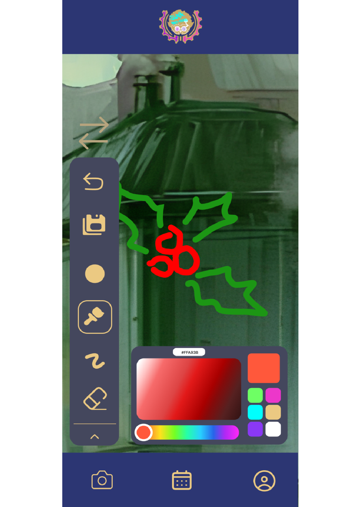

Sparks Of Zaun
📍IUT de Lannion
Dans le cadre du workshop de Noël, notre équipe composée d'étudiants de 3ᵉ année de BUT MMI réalise en une semaine un calendrier de l'avant digital pour Heimerdinger et Ekko. Ce sont des personnages de la série Arcane, s'alliant et vivant dans le bidonville Zaun. Leur objectif est de décorer la ville pour Noël via une application de dessin Lorsque l'on se balade dans les rues du bidonville, on peut voir les dessins qui ont été faits à travers l'application mobile. Chaque jour dans l'application, on débloque dans le calendrier un nouvel outil de dessin. Comme la peinture et les graffitis sont très présents dans l'univers d'Arcane, les objets obtenus dans le calendrier s'affichent comme des armes à peinture, un peu comme dans le jeu vidéo Splatoon.
Détail de nos missions
- Réaliser un benchmark de calendriers
- Réaliser une veille technologique
- Créer un storytelling cohérent entre Arcane et l'application
- Créer une charte graphique
- Réaliser les objets du calendrier en 3D et générer des visuels réalistes avec Gemini
- Créer une stratégie de communication et des personas
- Réaliser des wireframes de l'application puis des mockups (version finale avec images et couleurs)
- Créer des éléments graphiques pour l'application et les kakemonos sans pieds (cases, Heimerdinger Noël, graffitis)
- Créer des kakemonos et les imprimer au makerspace de l'IUT
- Décorer notre stand avec des graffitis, sprays et tubes de peinture, kakemonos, une vidéo des modèles 3D
Acquis :
Créer un design system, Créer des éléments graphiques en raccord avec l'univers et la charte graphique
Outils :
Google Docs, Figma Jam, Canva, Figma, GitHub, Photoshop, Affinity, Krita, Blender, Gemini






